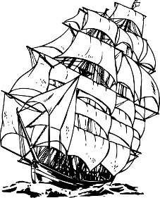

Sturm nalbandın dükkanına vardığında gökyüzü hâlâ mor renkteydi. Nalbant Tirien dükkanını bir vallen ağacının içine kurmuştu. Tirien'in dükkanına giden dolambaçlı rampa genişti ve atlar için kuvvetlendirilmişti. Tirien'in yüzü demirhane alevleri üzerine eğilmekten kızarmış ve nalbant çekicini kullanmaktan kollarıyla omuzları kaslanmıştı. Nalbant yatağından çok erken kalkmıştı ve şövalye oraya vardığında işinin başındaydı.
"Sturm!" diye bağırdı. "İçeri gel, delikanlı. Ben de birkaç nalı sıkılaştırıyordum." Tirien'in Mercot adındaki yardımcısı harlı fırından bir sivri uçla birlikte bir çift maşa aldı. Çarpık nalı Tirien'in örsünün üzerindeki oluğa yerleştirdi ve kaslı nalbant nala iki kez vurdu. Mercot düzleşmiş nalı bir su kovasının içine hafifçe salladı. Sudan bir yılan tıslamasına benzeyen bir ses duyuldu ve buhar çıktı.
"Atıma ihtiyacım var, Tirien," dedi Sturm.
"Tamam. Mercot, Usta Brightblade'in atını getir."
Çocuğun gözleri faltaşı gibi açıldı. Çevrelerinde uçuşan is halkaları çocuğun şaşkınlıktan gözleri açılmış bir baykuşa benzemesine neden olmuştu.
"Kestane renginde ve kısırlaştırılmış olanını mı?"
"Evet, ve çabuk ol!" dedi Tirien. Sonra Sturm'e dönerek devam etti, "Onu istediğin gibi hazırladım. İyi bir at."
Mercot, Brightbalde'in atı Tallfox'u alt platforma getirirken Sturm borcunu ödedi. Sturm, Tallfox'u bir Quekiri kabile üyesinden sadece birkaç hafta önce satın almıştı ve hâlâ atın huylarını öğreniyordu.
Uyku tulumunu ve çantasını sırtlayarak Mercot'un atını getirdiği rampaya doğru yürümeye başladı. Tirien'in çekici tekrar çalışmaya başladı, bükülmüş demir parçalarını at nallarının sivri kısmı haline getiriyordu.
Sturm erzaklarını Tallfox'un her iki yanına eşit bir şekilde paylaştırdı. Su şişesini doldurduğunda, "Geç kaldın," diyen bir ses işitti. Kitiara çatı saçağının altındaki bir köşede duruyordu. Kulaklarına kadar kırmızı bir battaniyeye sarılmıştı.
"Öyle mi?" diye sordu Sturm. "Güneş henüz doğuyor. Sen buraya ne zaman geldin?"
"Saatler önce, burada uyudum," dedi Kitiara, battaniyesini üzerinden atarak. Hâlâ önceki akşam giydiği kıyafetler içindeydi. Kollarını gerdi ve sırtını hareket ettirdi.
"Tanrıların aşkına neden burada uyudun?" diye sordu Sturm. "Benim seni unutup, sensiz gideceğimi mi düşündün?"
"Hayır, senin yüzünden değil, asil dostum. Sadece burası uyumak için iyi bir yer gibi gözüktü. Bunun yanı sıra Pira'nın tamir isteyen bir ayakkabısı vardı."
Sturm, Tallfox'u yere çökertti. Atın eyerine oturdu ve arkadaşını bekledi. Kitiara rampadan kahverengi, beyaz benekli ve gayet garip görünüşlü bir dişi hayvanla indi.
"Bir sorun mu var?" diye sordu Kitiara, Sturm'un arkasından giderken.
"Sadece yolculuk için büyük, ateşli bir aygır tercih edeceğini düşünmüştüm," diye karşılık verdi Sturm. "Bu– hmm, ilginç hayvan sana hiç yakışmıyor."
"Bu 'ilginç hayvan', senin atın bir kemik yığınından ibaret olduğunda hâlâ sabit adımlarla yürüyor olacak," dedi Kitiara. Rahatsız uykusu Kitiara'nın Tanis'den ayrıldıktan sonraki mizacını değiştirmemişti. "Pira ile birlikte altı sefere katıldım ve o beni her zaman eve geri getirdi."
"Özür dilerim."
* * * * *
Solace'ın dışına çıkıp, doğudan kuzeye yöneldiler. Yeni doğan güneş Solace'ın etrafındaki tepeleri yırtıyor, havayı ısıtıyordu. Sturm ve Kitiara kurutulmuş sığır eti ve suyla basit bir kahvaltı ettiler. Güzel şafak daha da güzel bir sabaha dönüştü ve Kitiara"nın ruh hali düzelmeye başladı.
"Yolda mutsuz olamam," dedi. "Yapacak ve görecek çok şey var."
"Aynı zamanda da tetikte olmalıyız," dedi Sturm. "Handaki yolcuların etrafta dolaşan eşkıyalardan bahsettiklerini duydum."
"Peh. Yaya köylüler eşkıyalardan korkmakta haklılar, ama konu silahlı ve binekli iki savaşçı olduğunda, korkması gerekenler hırsızlar!" Sturm arkadaşının düşüncesini nazikçe onayladı, fakat gözlerini ufukta, elini de kılıcının kabzasında tutmaya devam etti.
Takip ettikleri rota oldukça basitti. İkili Solace'ın tepelerini geçtikten sonra, kuzeybatıya dönecek ve sahile doğru gideceklerdi. Schallsea Boğazı'nın kıyılarında Zaradene adında küçük bir balıkçı limanı vardı. Kitiara ve Sturm oradan kolaylıkla güney Thelgaard'da bulunan Caergoth'a geçebilirlerdi. Caergoth'un kuzeyinde ise varmak istedikleri yer olan Solamniya bulunuyordu.
Planları buydu. Ama planlar, bilge büyücü Arcanist'in söylediği gibi, kuma çizilen figürler gibidir: kolay yapılır ve kolay bozulurlar.
* * * * *
Abanasinya'nın ormanları ve tepeleri katedilen millerle incelmişti. Kitiara geçmiş maceralarını anlatarak vakit geçiriyordu.
"Beni ilk kiralayan Mikkian'ın Yağmacıları'ydı. Çok kötüydüler. Mikkian. Lemish'in aşağı tabakasından bir serseriydi. Her zaman bir göz, bir kol ya da kulağının yarısı gibi vücudunun bir kısmını savaşlarda kaybetmek gibi kötü bir şansı vardı. Çok çirkin ve cimriydi! Onun kampına yürüdüm, kılıç kullanmadaki ustalığımdan emindim. O günlerde bir erkek gibi davranmaya çalışıyordum yoksa belalılar bana karşı birlik olurdu," dedi Kitiara.
"Paralı asker olarak kiralanmak için ne yapmak gerekiyor?"
"Mikkian'ın çetesinde bunun bir tek yolu vardı: onun adamlarından birini öldürmek. Mikkian'ın maaş bordrosu çok doluydu ve bir başkası için yer açmak ona göre değildi." Kitiara. Mikkian'la ilgili anıları karşısında burnunu buruşturdu. "Aşağılık piç! Piyadeler büyük bir çember oluşturdular ve baltalı bir adamıyla beni o çemberin içine itelediler. Adamın adı neydi? Öldürdüğüm ilk adam. Trigneth miydi? Yoksa Drigneth mi? Her neyse, buna benzer bir isim. Biz de karşı karşıya geldik, baltaya karşı kılıç. Adil bir dövüş değildi. Çemberin ortasında durmak zorundaydık, yoksa Mikkian'ın adamları hançerlerini ya da mızraklarının uçlarını bize batıracaklardı. Trigneth –yoksa Drignet miydi– bir oduncu gibi dövüştü, doğrarcasına balta sallıyordu. Bana hiç dokunamadı. Ona düz bir vuruş indirdim, tam boynundan." Sturm'e baktı. Şövalye şok olmuş gibiydi.
"Ne kadar zaman Mikkian'ın çetesiyle beraber kaldın?" diye sordu Sturm en sonunda.
"On iki hafta. Takar'a yakın surlarla çevrili bir şehri kuşattık ve Mikkian sonunda onsuz yapamayacağı bir parçasını kaybetti." Sturm bir kaşını kaldırdı. "Başını," dedi Kitiara. "Bu yağmacıların sonu oldu. Bütün çete o olaydan sonra dağıldı, adamlar yağmaya ve öldürmeye başladı. Kent halkı ayaklanıp savaşmaya başladı ve bütün haydutları şehirden sürdüler. Şanslıydım," Kitiara ağzını çarpıtarak gülümsedi.
Kitiara'nın bu tip çok hikayesi vardı, hepsi de heyecanlı ve hemen hemen kanlıydı. Sturm'ün kafası karışmıştı. Kitiara'yı yaklaşık iki senedir tanıyordu ve onu anlamaktan çok uzaktı. Bu güzel ve parıltılı kadın zeka ve çekicilikten nasibini epeyce almıştı. Ama yine de en birincil dereceden basit savaş atmosferi ona fazlasıyla hitap etmekteydi. Sturm onun gücüne ve kurnazlığına hayran olduğunu itiraf etmek zorundaydı, ama Kitiara'dan biraz da korkuyordu.
Yol bir patikaya ulaştı ve birkaç mil sonra da kumlu bir çam çoraklığına dönüştü. Hava durgun ve nem yüzünden ağırdı. O gece çorak alanda kamp kurdular, rüzgar onlara denizin kokusunu taşıyordu. Çam budaklarından buruk ve dumanlı bir kamp ateşi oluştu. Kitiara ateşi beslerken Sturm atlara su verdi. Sonra loş ateş ışığına geri döndü ve kumun üzerine oturdu. Kitiara ona soğuk bir koyun eti parçası uzattı. Sturm biberli eti kemirirken Kitiara sırtüstü uzandı, ayağını ateşe doğru uzattı ve başını uyku tulumunun üzerine koydu.
"Paladin orada," dedi Kitiara. "Görüyor musun?" Eliyle gökyüzünü işaret ediyordu. "Paladin, Mishakal, Branchala," dedi, sırayla takımyıldızların isimlerini söylüyordu. "Gökyüzünü bilir misin?"
"Çocukken eğitmenliğimi yapan Vedro bir astrologdu," dedi Sturm. Kitiara'nın sorusuna tam olarak cevap vermemişti. Gözlerini kaldırdı. "Tanrıların isteklerinin yıldızların ve gezegenlerin hareketleriyle çözümlenebileceği söylenir."
"Hangi tanrılar?" diye karşılık verdi Kitiara aylakça.
"Tanrılara inanmıyor musun?"
"Neden inanayım? Son zamanlarda dünya için ne yaptılar? Ya da benim için?"
Sturm, Kitiara'nın onu kasten kızdırdığını söyleyebilirdi, bu yüzden konuyu değiştirdi. "Oradaki grubun adı ne?" diye sordu. "Paladin'in karşısındakinin?"
"Takhisis. Karanlığın Kraliçesi."
"Oh, evet, Ejderha Kraliçe." Karanlığın hakimini görmeye çalıştı, ama ona göre bu sadece saçılmış olan yıldızlardan ibaretti.
Solinari'nin beyaz küresi ufkun üzerine yükseldi. Onun ışıltısında kum tepecikleri ve ıssız çamlar gündüzki halleri düşünüldüğünde soluk hayaletler gibiydi. Bir süre sonra gökyüzünün ortasında kırmızı bir parlaklık belirdi.
"İşte bunu biliyorum," dedi Sturm. "Lunitari, kırmızı ay." "Ergoth'lulara göre Luin. Goodlund'da ise Kızıl-Göz."
"Bir ay için garip bir renk, ne dersin?" dedi Kitiara.
Sturm kemirilmiş koyun kemiğini bir kenara fırlattı. "Aylar için belirlenmiş kesin renkler olduğunu bilmiyordum."
"Uygun olan beyaz ya da siyahtır. Kırmızının bir anlamı yok." Kitiara başını kaldırdı ve böylece Lunitari tam olarak görüşüne girdi. "Neden kırmızı olduğunu merak ediyorum."
Sturm uyku tulumuna dayandı. "Tanrılar ona böyle olmasını emretmiş. Lunitari tarafsızlığın, nötr büyünün ve illüzyonun ikametgahı. Vedro onun renginin tanrılar için kurban edilen insanlardan geldiği teorisini üretmişti." Sturm bunu söylerken tedbirliydi. "Diğer filozoflar ise kırmızı rengin Ejderha Mızrağı'nın ilk şövalyesi olan Huma'nın kalbini simgelediğini iddia ediyor."
Sturm'un arkadaşından gelen tek cevap sessizlikti.
"Kit?" dedi alçak sesle. Sesine karşılık olarak gölgelerin içinden bir hışırtı geldi. Kitiara uyumuştu.
* * * * *
Zaradene gri beyaz bir sahil üzerine kurulmuş bir köydü. Çeşitli ebatlarda yaklaşık elli ev bulunuyordu ve bu evlerin her birinden ikiden fazla hikaye çıkmazdı. Sturm ve Kitiara köye doğru giden dik yokuşlu kum tepelerinden geçtiler. Yol üzerinde kum içine gömülmüş, sivri kazıkların arasından yol bulup geçmek zorunda kalmışlardı.
"Bir kirpi," dedi Kitiara. "Süvariye karşı bir savunma. Köylüler kısa bir süre önce baskına uğramış. Kazıkların arkasında kan lekeli küçük bir siper var."
Sturm ve Kitiara köyün ana yolu olan kumlu patikayı takip ederken, Zaradene köylülerinin yüzlerinde hiç de dostane bir ifade yoktu. Somurtkan gözler ve çalışmaktan aşınmış ellerin yumruk halinde sıkılması sanki her yerdeydi.
Kitiara atının dizginini çekti ve Üç Balık adındaki bir hanın önünde atından indi. Garip beyaz direkler ve kalaslar tahta fıçıların arasına konulmuştu. Sturm, Tallfox'u direklerden birine bağladı. Bu direk uzun zaman önce ölmüş devasa bir deniz yaratığına ait bir kemikti.
"Sence neydi?" diye sordu Sturm, Kitiara'ya merakla.
Kitiara kemiğe baktı ve, "Belki de bir deniz yılanıydı. Gel, İçeride gemiciler vardır."
Üç Balık hanı sabahın erken saatleri olmasına rağmen sürekli müşterileri tarafından doldurulmuştu. Kitiara'nın yaklaştığı ilk adam, "Paralı Askerler!" diye gürledi ve Kitiara'nın ayağına tükürdü. Kitiara kılıcını çekti, ama Sturm onun bileğini yakaladı.
"Birini öldürürsen hepsiyle savaşmak zorunda kalacağız," diye fısıldadı. "Sabırlı ol. Boğazları geçmek için tekneye ihtiyacımız var."
Yarım düzine kaptanla konuştularsa da hepsi tarafından terslendiler. Kitiara öfkelenmiş, Sturm şaşırmıştı. Daha önce de deniz yolculuğu yapmıştı ve denizciler yanlarına birkaç yolcu almaktan hoşlanırlardı. Balık tutup kazanacaklarından ya da kargonun ödediği paradan çok daha fazlasını önermişlerdi, üstelik güvertede çok az yer kaplayacaklardı.
Zaradene denizcileri neden bu kadar düşmanca davranıyorlar, diye merak etti Sturm.
Bara yöneldiler. Kitiara bira istedi, ama bütün bar Nostar'ın siyah şarabıyla doluydu. Sturm acı şaraptan bir yudum aldıktan sonra kadehi bir kenara fırlattı. Susuz kalmak daha iyi, diye düşündü.
Kitiara, Silvanesti paralarından birisini pis barın üzerine fırlattı. Han loşluğuna rağmen, altının parlaklığı barmenin gözünü almıştı. Barmen, Sturm ve Kitiara'nın durduğu barın sonuna geldi.
"Bir şey mi istiyorsunuz?" dedi adam. Tıraşlı kafasında ter parlıyordu.
"Bilgi," dedi Kitiara. "Yalnızca biraz bilgi."
"Bu kadar altına istediğiniz kadar bilgiye sahip olabilirsiniz."
Barmen yağlı paçavrasını kolunun altına tıktı. Sturm paçavranın mı, yoksa barmenin gömleğinin mi daha pis olduğunu merak etti.
"Burada ne oldu?" diye sordu Kitiara.
"Burada paralı askerleri sevmezler. On gece önce atlılar köye saldırdı. Kaptıkları her şeyi götürdüler, bunların içinde kadın ve çocuklar da var."
"Onlar kimdi?" diye sordu Sturm. "Rütbeleri var mıydı?"
"Bazıları onların gerçekte insan olmadıklarını söylüyor," dedi barmen. "Bazıları sert, koyu renk derileri olduğunu ve–" Barmen etrafa dikkatlice bakıp, kimsenin onları dinlemediğinden emin oldu. "–ve bazıları da kuyrukları olduğunu söylüyor."
Sturm başka bir soru sormaya çalıştı, ama Kitiara onu bir bakışıyla durdurdu. "Caergoth'a gitmemiz gerekiyor," dedi Kitiara. "Zaradene'den biri bizi yanına alır mı?"
"Bilmiyorum. Baskında çoğu büyük kayıplar verdi. Sizi denize götürürken boğazlarınızı kesebilirler."
Barmen iğrenç içkisini hazırlamak için tekrar yerine döndü.
Sturm odayı inceledi. "Bundan hoşlanmadım," dedi. "Kuyruklu çapulcular mı? Bunlar ne tür bir canavar olabilir?"
"Başkasının mırıldanmalarını bu kadar ciddiye alma," dedi Kitiara. "Solace'ın güvenli göklerinden uzaklaştıkça daha da vahşi ve garip hikayeler duyacaksın." Kitiara, Nostar şarabını ağzını ekşitmeden yudumladı. "Kel kafalı bir konuda haklı: bu odada bir tane bile dostumuz yok."
Arkalarından gelen bir ses şöyle dedi: "Bundan emin olmayın, canlarım."
Sturm ve Kitiara sese doğru döndü. Adam Kitiara'dan yaklaşık bir kafa kısaydı, keskin hatları ve temiz, çocuksu bir yüzü vardı, bunlar elf ırkının işaretleriydi. Kitiara bir an Tanis'i en son gördüğü haliyle düşündü. Dudaklarında kan ve tokat iziyle kızarmış yanağıyla Kitiara'ya şaşkınlık içinde bakarken onu yeniden görür gibi oldu.
"Tirolan Ambrodel, hizmetinizde." Adam eğildi. "Gemici, harita yapımcısı, mücevher yontucusu ve kavalcı." Tirolan, Kitiara'nın eline uzandı ve dudaklarına doğru götürdü. Eli öpmedi, alnının üzerine koydu. Kitiara gülümsedi.
Sturm kendisini ve Kitiara'yı tanıttıktan sonra, "Bizi Caergoth'a götürecek bir taşıt bulabilir misiniz, Usta Ambrodel?"
"Kolaylıkla, efendim. Benim gemim. Yüksek Zirve, bu limanda ve kargo yükü var. Sadece iki kişi misiniz?"
"Biz ve iki at. Az yükle seyahat ediyoruz," dedi Kitiara.
"İki yolcu ve iki at, her biriniz için beş altın isterim."
Sturm bu yüksek fiyat karşısında afalladı, ama Kitiara küçümseyen bir tavırla kahkahayla gülmeye başladı. "İkimiz için sana dört altın vereceğiz," dedi.
"İki kişi için sekiz," diye önerdi Tirolan.
"Beş," dedi Kitiara. "Ve Silvanesti altınıyla ödeyeceğiz."
Tirolan Ambrodel'in kaşları ince burnuna doğru düştü. "Eli'nin gerçek altını mı?"
Kitiara barın üzerindeki madeni parayı aldı ve gemicinin yüzüne doğru tuttu. Tirolan dikkatle ve oldukça heyecanla elf altınına uzandı. Parayı tuttu, onu okşadı ve parmak uçlarını silik yazıt üzerinde gezdirdi. "Çok güzel," dedi. "Bu paranın beş yüzyıldan daha eski olduğunu biliyor musunuz? Doğu'nun Efendileri ormanın içlerine çekilip, bütün dünyayla olan ilişkilerini kesmeden önce basıldı. Bunlardan kaç tanesini et ya da şarap için harcadınız?"
"Bende bir düzine vardı," dedi Kitiara. "Şimdi ise beş tane var. Eğer bizi Caergoth'a taşırsan hepsi senin."
"Tamamdır!"
"Ne zaman gidiyoruz?" diye sordu Sturm.
"Gelgit ilk ay doğuşuyla çekilir. Gümüş ay, denizi berraklaştırdığında demirimizi sudan çekeriz! Ve yol almaya başlarız."
Tirolan parayı belindeki süet keseye koydu. "Şimdi, beni takip edin. Sizi Yüksek Zirve'ye götüreceğim."
Sturm barın üzerine birkaç madeni para bıraktı ve bardan çıktılar. Tallfox'u ve Pira'yı Zaradene'nin sokaklarında ilerletip, Tirolan'ın gösterdiği yolu takip ettiler. Nereye gitseler insanlar onlara yüzlerini çeviriyorlardı. Yaşlı bir kocakarı Tirolan yanından geçerken kötü şansa karşı bir büyü mırıldandı.
"Yerliler oldukça batıl inançlı," dedi Tirolan. "Bu günlerde yabancı olan her şey ve her kişi tehlikeli olarak kabul ediliyor."
Sturm arkasına dönerek, şehrin yükseklerinde bulunan kum tepelerinin üzerindeki kazıklarla oluşturulmuş daireye baktı.
"Korkmak için nedenleri var," dedi.
* * * * *
Zaradene'de tek bir virane iskele vardı. Sturm yamulmuş kalasların Tallfox'un ağırlığını taşıyıp taşıyamayacağını merak etti, ama Tirolan onu iskelenin güvenli olduğu konusunda rahatlattı.
"Atlardan daha ağır olan kargo her gün bu iskelenin üzerinden geçiyor," demişti.
"Gemin nerede?" diye sordu Kitiara.
"Gemim burnun ötesinde, orada."
"Neden o kadar uzağa demirledin?" diye sordu Sturm.
"Gemim ve tayfam Zaradene'de pek sevilmez. Ne zaman buraya uğramamız gerekse, derin sulara demirleyip yerlilerle aramızda çıkacak belalardan uzak durmaya çalışırız."
Geniş, kabuğa benzeyen bir mavna iskeleye bağlanmıştı. Dışarıda uykuya dalmış olan adamın yüzü yırtık bir şapkayla örtülüydü. Tirolan mavnaya zıpladığında adam irkilerek uyandı.
"Bu senin gemin mi?" dedi Tirolan yüksek ve neşeli bir sesle.
"Oh, evet."
"O zaman onu çalıştır, adamım. Bütün hafta için yeterli olacak parayı kazanabilirsin."
Atlar borda iskelesine getirildi. Kitiara, Pira'yı sakinleştirmek için onunla konuştuktan sonra kısrak sorun çıkartmadan sallanan mavnaya girdi. Diğer tarafta ise Tallfox sorun çıkartıyordu.
Sturm dizginleri yumruklarının arasına doladı ve korkmuş hayvanı geminin içine sürüklemeye çalıştı.
"Hayır, hayır, bunun yolu bu değil," dedi Tirolan. Dar filika küpeştesine atladı ve çeviklikle borda iskelesinin ucuna yürüdü, "İzin verir misiniz, Usta Brightblade?" Sturm isteksizce dizginleri ona verdi. Tallfox, Tirolan'ın narin elleri boynuna hafifçe vurmaya başladığı an sakinleşmeye başladı.
Tirolan atın sakinleşmesi için onunla konuştu. "Senin gibi güçlü biri bu ufak gemi yolculuğundan mı korkuyor? Ben korkmuyorum. Senden daha iyi miyim? Daha cesur muyum?" Sturm'un ve Kitiara'nın şaşkın bakışları arasında Tallfox başını enerjik bir şekilde salladı ve horuldandı. "Sonra," diye devam etti Tirolan sakin ve rahatlatıcı bir ses tonuyla, "aşağı adım at ve arkadaşlarının yanındaki yerini al." Kestane rengindeki at zarafetle mavnanın içine adım attı ve sessizce Pira'nın yanında durdu. Kuyrukları geminin sallanışıyla uyumlu bir şekilde oynuyordu.
"Bunu nasıl yaptın?" diye sordu Kitiara.
Tirolan omuzunu silkti. "Hayvanlarla iyi anlaşırım."
İskeleden uzaklaştıktan sonra, gemici yıpranmış bir yelken açtı. Mavna sallanan balıkçı teknelerinin ve birkaç büyük tüccar gemisinin arasından geçti. Gemi buruna kadar olaysız bir şekilde yol aldı. Sonra rüzgar durdu ve gemici temizliğinin başına geri döndü.
Koyu arduaz ve çivıt rengindeki bulutlar güneydeki ufku kapladı. Denizin mavi ve yeşil renginin üzerinde Yüksek Zirve'nin beyaz rengi duruyordu. Geminin şekli Zaradene limanındaki diğer gemilere benzemiyordu. Aşağıdan yukarı dimdik bir çizgi yükseliyor, keskin başı yüksek pupaya ulaşıyordu. Yüksek gemi direği de beyaza boyanmıştı ve açık havada yeşil bir flama direğin üzerinde dalgalanıyordu.
"Benim gemim," dedi Tirolan gururla. "Güzel, değil mi?"
"Daha önce hiç beyaz gemi görmemiştim," dedi Sturm.
"Çok güzel," dedi Kitiara. Çaktırmadan Sturm'a kaşlarını çattı. Geminin içinde atlarının arasına sıkışmışlardı. "Gittikçe daha da garipleşiyor," diye fısıldadı Kitiara. "Bir elf kaptan, yerel halktan çekinme, diğer gemilerden uzağa demirlenmiş garip bir beyaz gemi. Bunda göze çarpandan çok daha fazla sıradışı şey var. Ne kadar altınım olduğuna dair yalan söylediğim için mutluyum."
"Sana katılıyorum. Tallfox'u cezbettiği yol doğal değildi. Sanırım bir büyü kullandı," dedi Sturm. Ona göre, Solamniya geleneğinde büyü kullanımından daha kötü bir şey yoktu.
Kitiara elini Sturm'un omuzuna koydu ve, "Kılıcını el altında tut," dedi.
"Her şey yolunda mı?" diye seslendi Tirolan omuzunun üzerinden.
"Yolunda," dedi Kitiara. "Oh, gemin büyükmüş!"
Şimdi gemiden yaklaşık yüz metre uzaktaydılar ve manzaralarının tamamını Yüksek Zirve kaplıyordu. Beyaz gemi dalgaların içinde süzülüyordu. Güverte ve donanım bölümü boştu, ama geniş bir merdiven siperin üzerinden sarkıyordu. Tirolan bir iple mavnayı Yüksek Zirve'ye bağladı.
"Hey, oradakiler, canlarım! Kendinizi gösterin," diye güzel sesiyle bağırdı Tirolan. Geminin durgunluğu çıplak ayak sesleri ve bağrışmalarla bozuldu. Atik denizcilerden oluşan, hepsi keskin yüz hatlarına sahip ve sakalsız olan bir topluluk güverteye döküldü.
Sturm kendini coşkulu ellerle yukarı çekilerek güvertede buldu. Kitiara da gülümseyen dört denizci tarafında taşınarak Sturm'ü takip etti. Kitiara kahkahalarla gülüyordu, adamlar onu Sturm'ün yanına koydular.
Beyaz saçlı bir denizci, saçları aklarla dolu olmasına rağmen oldukça genç görünüyordu. Tirolan'a yaklaştı ve eğildi. "Hey, Kade Berun!" dedi Tirolan.
"Hey, Tirolan Ambrodel!"
"İçeri getirilecek iki güzel atımız var, Kade. Bununla ilgilenir misin?"
"Atlar! Atları en son–" Kade Berun, Sturm ve Kitiara'ya baktı, "–evden ayrıldığımızda görmüştüm."
Garip bir dilde emirler vermeye başladı ve enerjik denizciler mavnaya yukarıdan bakan parmaklığa doğru koştular. Tallfox ve Pira'ya büyük bir hayranlıkla baktılar. Gevezelik kesildi.
"Bir kordon atın," diye seslendi mavnadaki gemici. "Koşum takımlarını bağlayacağım, siz de onları yukarı çekebilirsiniz!"
Yüksek Zirve'nin mürettebatı söyleneni yaptıktan kısa bir süre sonra atlar geminin içindeydi. Hızla batan güneşin altında denizciler hızlı çalışıyorlardı ve bir süre sonra Yüksek Zirve yola çıkmak için hazırdı.
Muhteşem yeşil renkteki bir kumaştan oluşan yelken yükseltilmişti. Yüksek Zirve kıpırdandı ve Abanasinya burnundan uzaklaşmaya başladı. Tirolan dümene geçerek geminin burnunu Schallsea Boğazları'nın dalgalarına doğru sürdü.
Kitiara siyah deri yeleğini çıkarttı. Esinti ince keten giysisini kıpırdatmıştı. Gözlerini kapattı ve parmaklarını siyah kısa bukleleri arasında dolaştırdı. Gözlerini açtığında, Sturm'ü kara kara düşünürken yakaladı.
"Neşelen!" dedi Kitiara, Sturm'ün sırtına vurarak. "Rüzgar elverişli ve Tirolan işini biliyor gibi, çabucak Caergoth'da olacağız."
"Öyle sanıyorum," diye karşılık verdi Sturm. "Ama endişelenmekten kendimi alamıyorum. Bu sularda son kez yolculuk yaptığımda bir çocuktum. Gemide büyü vardı ve olaylar annem ve benim için yolunda gitmemişti."
"Ama üstesinden geldiniz, değil mi?"
"Geldik."
"O halde sakin ol! Sen bir şövalyesin ama törensel düşünce senin haklı mirasını geri isteyecek. Belki bunun farkında değilsin, ama Solamniya'da da bir ailem var."
"Uth Matar'lar mı?"
Kitiara başını salladı. "Babam bizi terk ettiğinden beri onlarla irtibata geçmedim. Seyahatlerimin hiçbirinde, hiçbir zaman Solamniya Ovası'nı geçmedim. Kuzeye gitme fikrini dile getirdiğinde, oraları keşfetmek için iyi bir zaman olduğunu düşündüm."
Kitiara bir kaşını kaldırdı. "Uth Matar'lar da bir şövalye soyu, biliyorsun."
"Hayır, bilmiyordum." Sturm gerçekte Kitiara hakkında çok az şey bildiğinin farkına varıyordu.
Kitiara onu duygularıyla başbaşa bırakarak aşağı gitti. Sturm çenesindeki kayışı kaydırdı ve miğferini çıkarttı. Boynuzlar kirlenmişti, bu gece onları parlatmak zorundaydı. Şimdi ise yapması gereken miğferini göğsünün üzerine koyarak deniz melteminin uzun, karışık saçları arasından geçmesine izin vermekti.